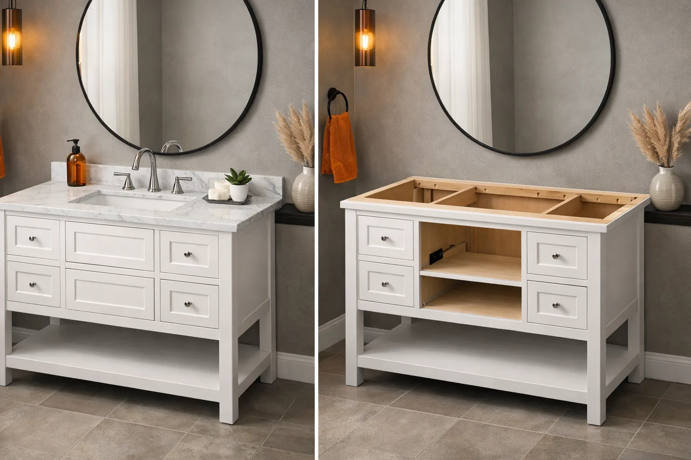

Bathroom Vanity With Top vs Without: Which Should You Buy? (2026)

Home & Bathroom Expert

Quick Answer
Buy a vanity WITH a top if you want a fast, budget-friendly, hassle-free installation. Buy WITHOUT a top if you want full control over your countertop material, sink style, and overall design. For most standard bathroom remodels, a vanity with an included top saves 15-30% compared to buying components separately.
You have found the perfect vanity cabinet online. The dimensions are right, the color matches your tile, the storage is exactly what you need. Then you see two listings: one “with top” for $449 and one “without top” for $279. Which one should you click?
This is one of the most common decisions bathroom remodelers face, and the answer is not always obvious. A vanity with an included countertop is convenient and cost-effective, but buying the cabinet alone gives you the freedom to choose your own countertop material, sink style, and edge profile. In this guide, we break down the real differences between these two options so you can make the right call for your bathroom, your budget, and your timeline.
If you are still deciding on the right vanity size and style, start with our complete guide to choosing a bathroom vanity before diving into the with-top vs without-top question.
In This Guide
What “With Top” vs “Without Top” Actually Means
Before we compare the two options, let us clarify what each term means in real-world product listings. This distinction matters because retailers are not always consistent with their labeling.
Vanity WITH Top
A complete, ready-to-install unit that includes:
- The cabinet (base unit with doors/drawers)
- The countertop (pre-cut to fit the cabinet)
- The sink (usually integrated or pre-mounted)
- Sometimes: the faucet and drain assembly
Also called: “vanity combo,” “vanity set,” “all-in-one vanity,” or “vanity with integrated top.”
Vanity WITHOUT Top
A cabinet-only purchase that includes:
- The cabinet (base unit with doors/drawers)
- Sometimes: hardware (knobs, pulls)
- Does NOT include: countertop, sink, or faucet
Also called: “vanity base,” “vanity cabinet,” “cabinet only,” or “vanity without countertop.”
Understanding this distinction is the first step. Now, which of these two approaches is actually better? That depends on your priorities, which we will break down next.
Pros & Cons: Side-by-Side Comparison
Here is a direct comparison of the two approaches across the factors that matter most to bathroom remodelers. We have evaluated each category based on typical buyer experiences and our research across hundreds of vanity products.
| Factor | With Top | Without Top |
|---|---|---|
| Total Cost | $200 - $800 all-in | $250 - $900 combined |
| Customization | Limited to available combos | Full control over materials |
| Installation Ease | Simpler, fewer steps | More complex, separate mounting |
| Installation Time | 2-3 hours typical | 4-6 hours typical |
| Design Flexibility | Pre-matched look | Mix and match freely |
| Countertop Quality | Usually cultured marble or ceramic | Any material you choose |
| Sink Options | Usually integrated/drop-in | Undermount, vessel, etc. |
| Replacement Ease | One unit to swap | Can replace top independently |
| Fit Guarantee | Components pre-matched | Must verify compatibility |
| Resale Appeal | Standard, adequate | Premium look if done right |
The pattern is clear: vanities with tops win on convenience and cost, while vanities without tops win on customization and design potential. The right choice depends on which column of benefits matters more to your specific project.
For a deeper comparison of vanity configurations, see our guide on single vs double sink vanities, which covers another major decision point in vanity shopping.
Cost Comparison: The Real Numbers
Price is often the deciding factor for most buyers. Let us break down what each option actually costs in 2026, including the hidden expenses that many shoppers overlook.
Vanity WITH Top: All-In Pricing
| Vanity Size | Budget Range | Mid-Range | Premium |
|---|---|---|---|
| 24-inch | $180 - $300 | $300 - $500 | $500 - $750 |
| 30-inch | $220 - $350 | $350 - $550 | $550 - $800 |
| 36-inch | $250 - $400 | $400 - $600 | $600 - $900 |
| 48-inch | $350 - $500 | $500 - $750 | $750 - $1,200 |
These prices typically include the cabinet, countertop, and sink. Faucet is sometimes included but usually sold separately ($30-$150 extra).
Vanity WITHOUT Top: Component Pricing
| Component | Budget | Mid-Range | Premium |
|---|---|---|---|
| Cabinet (30″) | $150 - $250 | $250 - $400 | $400 - $700 |
| Countertop | $60 - $150 | $150 - $300 | $300 - $600+ |
| Sink | $30 - $80 | $80 - $200 | $200 - $500 |
| Faucet | $30 - $60 | $60 - $150 | $150 - $400 |
| TOTAL | $270 - $540 | $540 - $1,050 | $1,050 - $2,200 |
The math is straightforward: for budget and mid-range builds, a vanity with an included top is almost always the more economical choice. The savings come from manufacturer bundling, standardized production, and the elimination of separate shipping costs. For premium builds where you want a specific stone or material, buying separately makes more sense because the quality gap between an included top and a custom countertop becomes very noticeable.
Shopping on a tight budget? Our roundup of the best bathroom vanities under $500 features excellent with-top options that punch above their price.
When to Choose a Vanity WITH a Top
A vanity with an included countertop is the right choice in several specific situations. If any of the following scenarios describe your project, the all-in-one route will save you time, money, and headaches.
Scenario 1: Budget-Conscious Remodel
If your total vanity budget is under $500, a with-top combo gives you the most value. You avoid the per-component markup and get a pre-matched set that looks intentional. Many top-rated vanities in this price range come with solid cultured marble tops that perform well for years.
Scenario 2: Rental Property or Guest Bathroom
For rental units or guest bathrooms that do not need to make a design statement, an all-in-one vanity is the practical choice. Installation is faster (saving labor costs), the integrated sink is less prone to leaks than a separately mounted one, and if a tenant damages the vanity, you can replace the whole unit quickly and affordably.
Scenario 3: Quick Weekend Remodel
If you want your new vanity installed by Sunday night, buying a vanity with a top eliminates the coordination problem. No waiting for a separate countertop order, no measuring twice, no hoping the sink cutout lines up. One box, one installation, one afternoon.
Scenario 4: DIY Installation
If you are handling the installation yourself, a with-top vanity significantly simplifies the process. The countertop is pre-cut to the exact cabinet dimensions, the sink is already mounted or integrated, and the faucet holes are pre-drilled. Check our vanity installation guide for step-by-step instructions.
Scenario 5: Small Bathroom Where Space Matters Most
In a small bathroom, an integrated vanity top with a built-in sink maximizes every inch of counter space. The seamless design also makes cleaning easier in tight quarters where every surface gets splashed. Many compact 18-24 inch vanities only come with tops because at that size, buying separately does not make practical sense.
In all of these situations, the convenience premium of a with-top vanity is actually a discount — you are paying less for a faster, simpler project.
When to Choose a Vanity WITHOUT a Top
Buying the cabinet separately gives you design freedom that no all-in-one combo can match. This approach makes sense when customization, material quality, or a specific aesthetic vision drives your project.
Scenario 1: Custom or Luxury Bathroom Build
If you are building a high-end master bathroom and want a specific countertop material — like Calacatta quartz, honed marble, or live-edge wood — you need to buy the cabinet and top separately. All-in-one combos almost never offer premium countertop materials. The extra cost is justified when you are investing $5,000+ in a bathroom renovation.
Scenario 2: Specific Sink Style
Want a vessel sink sitting on top of the counter? An undermount sink with invisible edges? A trough sink for a modern look? These options rarely come with all-in-one vanities. Buying the cabinet separately lets you choose any sink style and have the countertop cut accordingly. If you are considering a floating vanity, wall-mounted designs pair beautifully with custom tops.
Scenario 3: Matching Existing Countertops
If you want your vanity countertop to match your shower curb, bathtub surround, or a countertop in an adjacent room, you need to source the stone from the same slab. This is only possible when buying the countertop independently.
Scenario 4: Reusing a Quality Cabinet
If your existing vanity cabinet is still in great condition but the top is cracked, stained, or outdated, replacing just the countertop is far more cost-effective than buying an entire new unit. This is especially true for solid wood cabinets that were built to last decades.
Scenario 5: Non-Standard Dimensions
If your bathroom has an unusual layout — an angled wall, a pipe in an awkward spot, or a window that limits height — a custom countertop cut to your exact specifications may be the only option. In this case, buying a standard cabinet and having a countertop fabricated to fit is the most practical approach.
The without-top route is more work, but it gives you a bathroom vanity that is uniquely yours. If you are willing to invest the extra time and money, the results can be stunning.
Countertop Materials Guide: What You Need to Know
If you decide to buy a vanity without a top, your next big decision is choosing the countertop material. Each option has distinct advantages and trade-offs. Here is an honest breakdown of the six most popular countertop materials for bathroom vanities in 2026.
Quartz (Engineered Stone)
$200 - $400 for a vanity-size piece
Pros: Non-porous, no sealing needed, extremely durable, consistent color and pattern, stain-resistant, wide variety of looks including marble mimics.
Cons: Heavier than other options, can discolor with prolonged UV exposure, not heat-proof (hot styling tools can leave marks), higher price point.
Best for: Master bathrooms, families, anyone who wants a premium look with minimal maintenance.
Cultured Marble
$80 - $200 for a vanity-size piece
Pros: Affordable, lightweight, integrated sink options (seamless bowl), easy to clean, comes in many colors, smooth gel-coat finish resists stains.
Cons: Can yellow over time, gel-coat can crack if hit hard, not as heat-resistant as stone, lower perceived value.
Best for: Budget remodels, guest bathrooms, rentals. This is the material used in most “with top” vanity combos.
Natural Marble
$250 - $500 for a vanity-size piece
Pros: Timeless luxury appearance, each piece is unique, cool to the touch, high resale value, unmatched veining patterns.
Cons: Porous (stains easily without sealing), requires annual sealing, can etch from acidic products like toothpaste or cleaners, expensive, chips more easily than quartz.
Best for: Luxury bathrooms, homeowners who enjoy maintenance rituals, powder rooms with light use.
Granite
$200 - $400 for a vanity-size piece
Pros: Extremely hard and durable, naturally heat-resistant, each slab is unique, excellent scratch resistance, proven longevity.
Cons: Requires sealing every 1-2 years, heavier than most alternatives, limited color uniformity, can crack if not supported properly, some patterns look dated.
Best for: Homeowners who want natural stone durability without marble pricing, traditional and transitional style bathrooms.
Laminate
$50 - $120 for a vanity-size piece
Pros: Most affordable option, lightweight, easy to install, huge variety of colors and patterns, no sealing required, easy to replace.
Cons: Can peel at edges with moisture exposure, not repairable if chipped, lower perceived value, seams can trap water, shorter lifespan (5-10 years vs 20+ for stone).
Best for: Ultra-tight budgets, temporary housing, bathrooms slated for a full renovation in a few years.
Ceramic / Porcelain
$100 - $250 for a vanity-size piece
Pros: Completely waterproof, easy to clean, available with integrated sink basins, no sealing needed, good variety of modern designs, resistant to chemicals.
Cons: Can crack or chip if hit with heavy objects, limited edge profile options, heavy, harder to cut for custom installations.
Best for: Modern bathrooms, small vanities, bathrooms prone to high humidity or heavy water splashing.
No matter which material you choose, make sure it is specifically rated for bathroom use. Kitchen countertop materials are not always suitable for bathrooms, where constant humidity, water pooling around faucets, and chemical exposure from cleaning products create a harsher environment than most kitchens.
How Countertop Material Affects Installation
Your material choice also impacts the installation process. Laminate and cultured marble are lightweight and DIY-friendly. Granite and natural marble are heavy and may require two people or professional help to lift and position safely. Quartz sits in the middle — manageable for two experienced DIYers but heavy enough to warrant caution. If you are handling installation yourself, read our step-by-step installation guide which covers countertop mounting for each material type.
It is also worth noting that the countertop material you select affects how easy the vanity is to keep clean over time. Non-porous materials like quartz and ceramic require nothing more than a damp cloth. Porous materials like marble and granite need periodic sealing, typically once a year, to prevent staining from soap, toothpaste, and cosmetics that inevitably end up on bathroom surfaces.
Edge Profiles: A Detail That Matters
When ordering a custom countertop, you will need to choose an edge profile. This small detail has a surprising impact on the final look. The most common options for bathroom vanities are:
- Eased (flat with slightly rounded corners): Clean, modern, most affordable. Works with any style.
- Beveled: An angled cut at the top edge. Adds a subtle design element without being ornate.
- Bullnose (half or full): Fully rounded edge. Safe for families with children, traditional look.
- Ogee: An S-shaped decorative edge. Premium look, higher fabrication cost ($15-$30 per linear foot extra).
- Waterfall: The countertop extends down the side of the cabinet. Ultra-modern, expensive, dramatic impact.
For most bathroom vanities, an eased or beveled edge is the best balance of aesthetics and value. Save the ogee and waterfall edges for statement pieces where the countertop is the focal point of the room.
Frequently Asked Questions
Is it cheaper to buy a vanity with or without a top?
In most cases, buying a vanity with an included top is cheaper. All-in-one vanities with tops range from $200 to $800, while buying a cabinet ($150-$500) and a separate countertop ($100-$400) often totals $250 to $900. The bundled option saves 15-30% on average because manufacturers produce tops and cabinets together at scale. However, if you already own a countertop or find a great deal on remnant stone, buying without a top can occasionally be cheaper.
Can I put any countertop on a vanity without a top?
Not any countertop. You need to match the exact width of your vanity cabinet, and the countertop must be designed for bathroom use with proper moisture resistance. Standard widths are 24, 30, 36, 48, and 60 inches. Custom cuts are possible for stone and quartz but add $100-$300 to the cost. You also need to ensure the countertop depth matches your cabinet depth (usually 18-22 inches for bathroom vanities, compared to 24-25 inches for kitchen cabinets).
Do vanities with tops include sinks?
Most vanities sold “with top” include both the countertop and an integrated or drop-in sink. Some even include the faucet and drain assembly. However, some sellers list “with top” meaning countertop only, without the sink or faucet. Always check the “What’s Included” section in the product listing. Look for terms like “vanity combo” or “vanity set” to ensure you are getting everything.
What is the best countertop material for a bathroom vanity?
Quartz is the best overall choice for most buyers because it is non-porous, scratch-resistant, and requires zero sealing. It comes in hundreds of patterns, including convincing marble lookalikes. Cultured marble offers great value under $300 and is the most popular material in pre-made vanity tops. For luxury builds, natural marble is unbeatable aesthetically but demands regular sealing. Laminate is the budget king but will not last as long.
Should I buy a vanity with top for a rental property?
Yes, absolutely. A vanity with an included top is ideal for rentals for four reasons: faster installation (saves labor costs), lower upfront cost, easier replacement if damaged by tenants, and cohesive matched components that look clean without design expertise. Cultured marble tops are especially popular for rentals because they resist staining, are easy to clean, and are inexpensive to replace.
Final Verdict: Our Recommendations by Scenario
After comparing cost, convenience, customization, and long-term value, here is our straightforward advice for different buyer types.
Buy WITH a Top If...
- Your budget for the vanity (cabinet + top + sink) is under $600
- You are renovating a guest bathroom, half-bath, or rental property
- You want a weekend project you can finish in one day
- You are doing a DIY installation without professional help
- You need a compact vanity for a small bathroom where integrated design saves space
- You want the peace of mind that all components are guaranteed to fit together
Buy WITHOUT a Top If...
- You are building a custom master bathroom and want quartz, marble, or granite
- You want a vessel sink, undermount sink, or other specialty sink style
- You need to match existing stone in the bathroom
- Your bathroom has non-standard dimensions requiring a custom countertop cut
- You are investing in a floating vanity for a high-end modern look
- You already have a quality cabinet and only need a new top
The Bottom Line
For 80% of bathroom remodels, a vanity with an included top is the smarter buy. It costs less, installs faster, and looks perfectly fine for most applications. The 20% who should buy separately are those doing premium builds where the countertop material is a design statement, not just a functional surface.
Whichever route you choose, make sure you have measured your space correctly, confirmed your plumbing locations, and read our complete vanity buying guide to avoid common mistakes. And if you are debating between a 48-inch double sink setup or a standard single, that decision should come before the with-top vs without-top question.